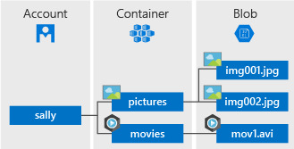

4. VCP CLI操作説明書
4.1. 概要
オンデマンド構築機能で オブジェクトストレージ機能である Amazon S3 および Azure Blob Storage を操作するコマンドを 提供する。
対象とするクラウドプロバイダーは、以下の通り。
4.2. VCPとクラウドオブジェクトストレージの概念の対応付け
VCP上でクラウドオブジェクトストレージを扱う際のモデルは、以下のようにする。
VCP |
AWS(s3) |
Azure(Blog Storage) |
|---|---|---|
volume |
ストレージアカウント |
|
volume |
Bucket |
Container |
file |
object |
Blob |
参考 Azure のBlob Storageのモデル

4.3. 機能概要
Linux環境(JupyterNotebook、もしは各VcNode上)で実行できるコマンドラインツールを提供する。
コマンドラインツールは、 vcpcli と呼ぶ。
vcpcli の機能は以下の通り。
Usage:
vcp storage [--debug] create [--no-verify] [--public] <bucket_path>
vcp storage [--debug] drop [--no-verify] <bucket_path>
vcp storage [--debug] ls [--no-verify] <path>
vcp storage [--debug] cp [--no-verify] <src_path> <dest_path>
vcp storage [--debug] rm [--no-verify] <path>
vcp configure
vcp -h
vcp --version
Options:
-h --help ... ヘルプを表示
--public ... createコマンドのオプション。作成するvolumeやfileをpublic-access可能とする
--debug ... デバッグモード
--no-verify ... Vaultへのアクセス時にSSLの検証を省く
Commands:
configure ... 設定ファイルのテンプレートを出力する
storage ... ストレージの操作
create ... ボリュームを作成
drop ... ボリュームを削除
ls ... ボリューム、オブジェクトの一覧を表示する。引数は接頭辞。
cp ... オブジェクトをコピーする
rm ... オブジェクトを削除する
Parameters:
path: storage種別://volume名/file名 ... storage種別(aws-s3|azure-blob)
Environment variables:
TOKEN: VCC APIアクセストークン
VCPCLI_CONFIG_DIR: 設定ファイルconfig.ymlがあるディレクトリ(デフォルト $HOME/.vcpcli)
4.4. 認証情報の取得方法
AWS、Azure にアクセスするめの認証情報(アクセスキーなど）は、VC コントローラ上のVaultサーバから取得する。
そのため、vcpcli を利用するためには、VCP SDKと同様にVC
コントローラアクセス用のアクセストークンのが必要である。
認証サーバのVaultサーバ上の保存場所は、設定ファイルに記述する。
設定ファイルについては後述
...
aws:
access_key: vault://cubbyhole/aws_access_key
secret_key: vault://cubbyhole/aws_secret_key
region:
azure:
tenant_id: vault://cubbyhole/azure_tenant_id
client_id: vault://cubbyhole/azure_client_id
client_secret: vault://cubbyhole/azure_client_secret
#
azure_resource_group_name: fillme
# 設定する
azure_location: fillme
...
4.5. ユーザ操作説明
4.5.1. インストール手順
vcpcli をツールを実行するサーバにインストールする方法は、以下の通り。
vcpcliが使用するVCコントローラアクセス用CA証明書のインストール
CA証明書がインストールできない場合は、
--no-verify オプションを使用する。
必要とするライブラリ、ツールのインストール方法
AWS API呼出用の python ライブラリをpipインストールする。
requirements.txt
awscli==1.11.139 docopt==0.6.2 azure-cli==2.0.59 ruamel.yaml==0.15.74
TOKENという環境変数にVCC APIアクセストークンを設定する
4.5.2. 設定手順
vcpcli の設定ファイルは、 $HOME/.vcpcli/config に下記のように記述する。
$HOME/.vcpcli/config.yml の例:
vcc:
# VCコントローラのIPアドレス
host: 192.168.1.1
aws:
access_key: vault://cubbyhole/aws_access_key
secret_key: vault://cubbyhole/aws_secret_key
# VPNカタログの情報と同じ
region: ap-northeast-1
azure:
tenant_id: vault://cubbyhole/azure_tenant_id
client_id: vault://cubbyhole/azure_client_id
client_secret: vault://cubbyhole/azure_client_secret
# VPNカタログの情報と同じ
azure_resource_group_name: fillme
azure_location: fillme
4.5.3. コマンド概要
volume作成
volume削除
オブジェクトのアップロード
オブジェクトのダウンロード
ボリュームの一覧表示
オブジェクトの一覧表示
オブジェクトの削除
4.5.3.1. volume作成
export TOKEN=VCCアクセストークン
vcp storage create [--public] aws://<bucketname>
AzureのBlobにおけるストレージアカウントとBlobコンテナをvcpcliでは 両方ボリュームとみなす。
export TOKEN=VCCアクセストークン
vcp storage create azure://<storage_account_name>
vcp storage create [--public] azure://<storage_account_name>/<container_name>
vcp storage create azure://<storage_account_name>
vcp storage create azure://<storage_account_name>/<container_name>
4.5.3.2. volume削除
export TOKEN=VCCアクセストークン
vcp storage drop azure://<storage_account_name>
vcp storage drop azure://<storage_account_name>/<container_name>
4.5.3.3. オブジェクトのアップロード
export TOKEN=VCCアクセストークン
vcp storage cp <local_src_path> aws://<bucketname>/<dest_path>
vcp storage cp <local_src_path> azure://<storage_account_name>/<container_name>/<dest_path>
すでに同じ名前のオブジェクトがある場合は上書きする。
4.5.3.4. オブジェクトのダウンロード
export TOKEN=VCCアクセストークン
vcp storage cp aws://<bucketname>/<src_path> <local_dest_path>
vcp storage cp azure://<storage_account_name>/<container_name>/<src_path> <local_dest_path>
4.5.3.5. ボリュームの一覧表示
export TOKEN=VCCアクセストークン
vcp storage ls aws://
vcp storage ls azure://
コンテナの一覧
export TOKEN=VCCアクセストークン
vcp storage ls azure://<storage_account_name>/
4.5.3.6. オブジェクトの一覧表示
export TOKEN=VCCアクセストークン
vcp storage ls aws://<bucketname>/<path>
vcp storage ls azure://<storage_account_name>/<container_name>/<path>
4.5.3.7. オブジェクトの削除
export TOKEN=VCCアクセストークン
vcp storage rm aws://<bucketname>/<path>
export TOKEN=VCCアクセストークン
vcp storage rm azure://<storage_account_name>/<container_name>/<path>
4.6. 制限事項
4.6.1. Bucket名 / ストレージアカウント名の制限
AWS S3 のBucket 名称は 3 ～ 63 文字の長さで、英数字と
.(ピリオド) および-(ハイフン) を使用可能Azure のストレージアカウントは 3 〜 24 文字の長さで、英数小文字と数字を使用可能
4.6.2. 操作の制限
AWS S3, Azure Files の疑似ディレクトリ構造はサポートしない。（フォルダのコピーと削除は利用できない）
AWS S3 と Azure Files間のcopy(cp)は、
vcpcli実行マシン上に一時ファイルを作成する。大きなファイルサイズの転送時は、実行マシン上の残りディスク容量を超えないように注意する。